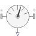

PartialRelativeSensorBase model to measure a relative variable between two frames |

|
Information
This information is part of the Modelica Standard Library maintained by the Modelica Association.
This is a base class for 3-dim. mechanical components with two frames and one output port in order to measure relative quantities between the two frames or the cut-forces/torques in the frame and to provide the measured signals as output for further processing with the blocks of package Modelica.Blocks.
Parameters (1)
| n_out |
Value: 1 Type: Integer Description: Number of output signals |
|---|
Connectors (3)
| frame_a |
Type: Frame_a Description: Coordinate system a |
|
|---|---|---|
| frame_b |
Type: Frame_b Description: Coordinate system b |
|
| y |
Type: RealOutput[n_out] Description: Measured data as signal vector |
Components (1)
| world |
Type: World |
|---|